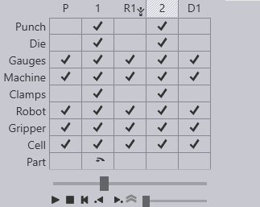

Bend navigator
The Bend Navigator at the top of the screen provides an overview of the complete cycle.

-
Bend navigator can be opened by pressing the Z key.
-
The navigator displays the following status icons:
-
Icons in uncolored cells → No Errors/Warnings
-
Icons in Orange colored cells → Indicate Errors
-
Icons in Yellow colored cells → Indicate Warnings
-
-
By clicking on a cell that displays error/warning, it takes you to the simulation stage where those specific error/warning occurs.
Bend navigator columns
Pickup (P) - The column marked P represents the part pickup operation. Before bending starts, the robot picks up a flat sheet from a pallet, or from a part dispenser. This column represents this operation. You can click on it and use the slider to view a simulation of the pickup operation.
Bending (1, 2, 3,…) - The columns marked with tags like 1, 2, 3 represent bending operations. You can click on these columns to view a simulation of the bending process.
Regrip (R) - The columns marked with tags like R1 represent regrip operations. During pickup, the gripper will pick up the part by gripping it along a particular plane, in a particular orientation. Sometimes, not all the bends in the part can be processed with this same orientation, and the gripper may need to regrip the part to continue. This column represents such regrip operations.
Deposit (D) - The columns marked with tags like D1 represent the part deposit operations on the final pallet, conveyor or basket.
Bend navigator rows
The Bend navigator rows represent the components involved at each stage of the bending cycle. Each row displays a status icon indicating whether that component is clear, has a warning, or has an error at that stage.
The following rows are present in the FluxRobot CAM navigator:
Punch — Shows the status of the punch tool at each bending stage.
Die — Shows the status of the die at each bending stage.
Back Gauge — Shows the status of the back-gauge fingers.
Part — Shows the part geometry status.
Clamps — Shows the status of the sheet clamps.
Robot — Shows the status of the robot arm and its path.
Gripper — Shows the status of the gripper holding the part.
Cell — Shows the overall status of the robot cell.
| See Troubleshooting for more information on the meaning of the icons and how to resolve errors and warnings. |
Shortcut keys
These shortcut keys can help speed up navigation between the different modes and panels in FluxRobot CAM.
Navigator shortcuts |
|
PgUp PgDn |
Switch to the previous or next stage in the simulation |
|
Switch to the previous or next phase within the same stage. For example, phases in bending are the steps like part insert, gauge-retract, bend, and beam-open. |
Spacebar |
Start/stop the simulation |
Z |
Expand/collapse the navigator panel. |
Panel shortcuts (keyboard) |
|
E E |
Open the panel for the current stage (bend / pickup / regrip / deposit) |
E B |
Open the Back-gauge panel for the current bend |
E D |
Open the Die panel |
E G |
Open the Gripper panel (to adjust the gripper position for this stage) |
E R |
Open the Robot Strategy panel for the current bend |
E W |
Open the Waypoints panel for the current stage |
Panel shortcuts (mouse) |
|
twice on navigator header |
The first click switches the simulation to that stage. The second click opens the panel for the stage |
on the back-gauge |
Open the Back-gauge panel for the current bend |
on the die |
Open the Die panel |
on the punch |
Open the Punch panel |
on the gripper (or robot C axis) |
Open the Gripper panel |
on the pallet |
Open the Pallet panel |
on the camera |
Open the Camera panel (editing pickup detection images for this part) |
on a blank on the pickup pallet |
Open the Pickup panel |
on a suction cup of a gripper |
Open the Suction panel (suction cup settings for this gripper) |
on a part on the deposit pallet |
Open the Deposit panel |
on the X,A or B axes of the robot |
Open the Robot Strategy panel for the current bend |
on the robot rail |
Open the Waypoints panel for the current stage |
on the regrip stations |
Open the Regrip Stations panel |